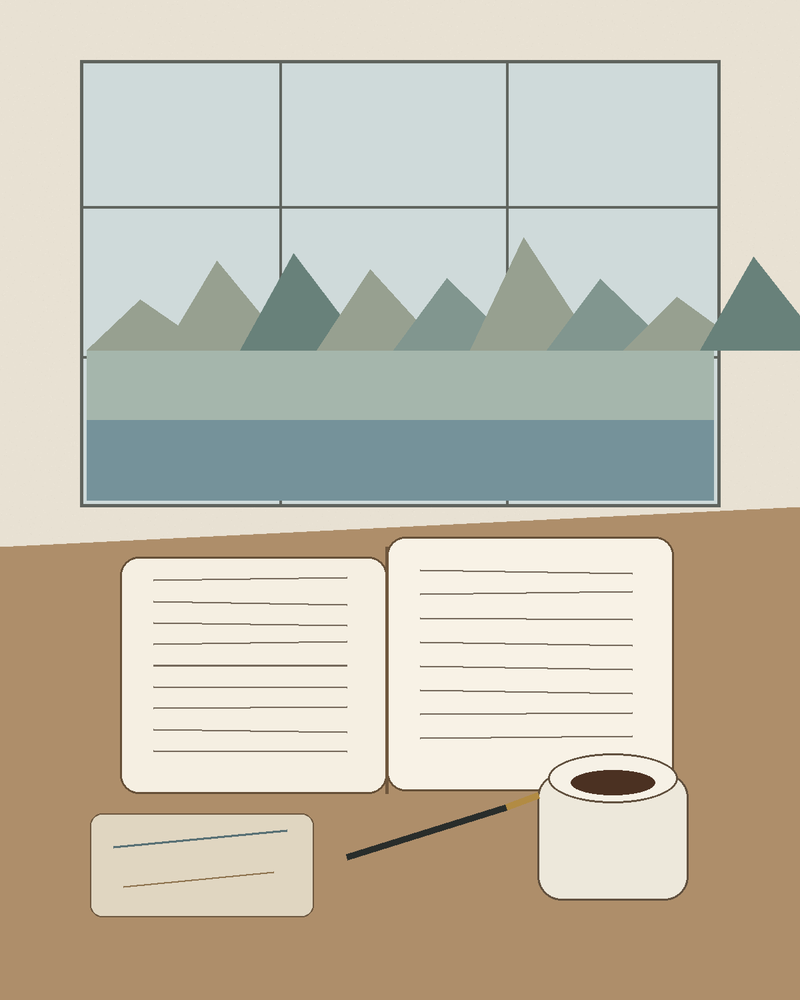

READING · TRAVEL NOTE
旅行里最值得带的，
是一本慢书
A quiet book changes the speed of a place.
真正留下来的，往往不是行程表，而是某个下午：窗外有山和水，桌上有咖啡，书刚好读到一句让人安静下来的话。

window · book · coffee · slow attention
ESSAY / CULTURE / TRAVEL
A quiet book changes the speed of a place.
真正留下来的，往往不是行程表，而是某个下午：窗外有山和水，桌上有咖啡，书刚好读到一句让人安静下来的话。

行程越密，越容易只记得自己赶过路。留半天没有目的的时间，反而更容易遇到真正的感受。
不是为了拍照好看，而是让注意力从手机和路线里退出来，重新回到一页纸上。
同一句话，在不同的窗边、天气和咖啡旁边，会留下完全不同的记忆。